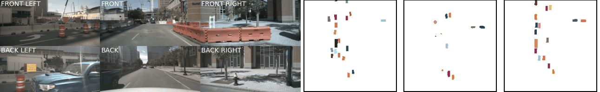
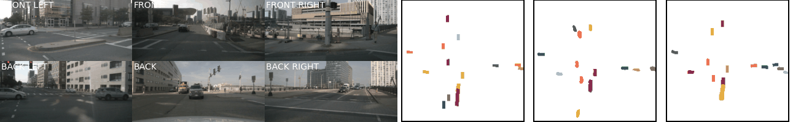
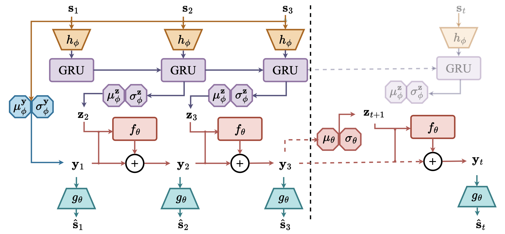
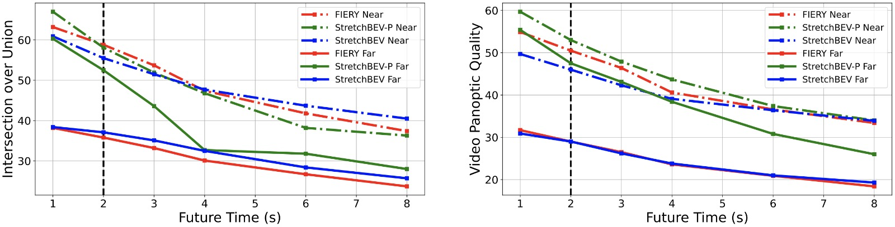

Images
Ground Truth
FIERY
StretchBEV-P

Images
Ground Truth
FIERY
StretchBEV-P

Example comparisons with FIERY. From left to right, we show images, ground truth labels, FIERY predictions and StretchBEV-P predictions. We show examples for short (top 2 examples) and mid settings (bottom 2 examples), 2 and 4 seconds into the future respectively..
Abstract
In self-driving, predicting future in terms of location and motion of all the agents around the vehicle is a crucial requirement for planning. Recently, a new joint formulation of perception and prediction has emerged by fusing rich sensory information perceived from multiple cameras into a compact bird's-eye view representation to perform prediction. However, the quality of future predictions degrades over time while extending to longer time horizons due to multiple plausible predictions. In this work, we address this inherent uncertainty in future predictions with a stochastic temporal model. Our model learns temporal dynamics in a latent space through stochastic residual updates at each time step. By sampling from a learned distribution at each time step, we obtain more diverse future predictions that are also more accurate compared to previous work, especially stretching both spatially further regions in the scene and temporally over longer time horizons. Despite separate processing of each time step, our model is still efficient through decoupling of the learning of dynamics and the generation of future predictions.
Method Overview
This figure shows the inference procedure of our model StretchBEV. We start with the first $k=3$ conditioning frames where we sample the stochastic latent variables from the posterior distribution~(purple). On the right, we show the prediction at a step $t$ after the conditioning frames where we sample from the learned future distribution~(red). The dashed vertical line marks the conditioning frames.
[Code Coming]
Sample Comparisons
In this section, we provide additional qualitative examples where we show samples that are generated by FIERY and StretchBEV-P.
FIERY
StretchBEV-P
Evaluation over Different Temporal Horizons
We plot the performance of our models StretchBEV and StretchBEV-P in comparison to FIERY over a range of temporal horizons from 1 second to 8 seconds in terms of IoU (left) and VPQ (right) for spatially far (solid) and near (dashed) regions separately. The vertical dashed line marks the training horizon. That is, we train all the models to predict 2 seconds into the future and simply change the evaluation setting to predict more time steps.
Paper

StretchBEV: Stretching Future Instance Prediction Spatially and Temporally
Adil Kaan Akan and Fatma Guney
In ECCV, 2022.
@InProceedings{Akan2021ECCV,
author = {Akan, Adil Kaan and Guney, Fatma},
title = {StretchBEV: Stretching Future Instance Prediction Spatially and Temporally},
booktitle = {European Conference on Computer Vision (ECCV)},
year = {2022},
}
}Acknowledgements
Kaan Akan was supported by KUIS AI Center fellowship, Fatma Güney by TUBITAK 2232 International Fellowship for Outstanding Researchers Programme..